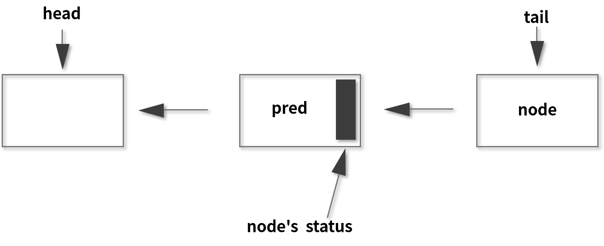

- 00 由点及面，搭建你的 Java 并发知识网.md.html
- 01 为何说只有 1 种实现线程的方法？.md.html
- 02 如何正确停止线程？为什么 volatile 标记位的停止方法是错误的？.md.html
- 03 线程是如何在 6 种状态之间转换的？.md.html
- 04 waitnotifynotifyAll 方法的使用注意事项？.md.html
- 05 有哪几种实现生产者消费者模式的方法？.md.html
- 06 一共有哪 3 类线程安全问题？.md.html
- 07 哪些场景需要额外注意线程安全问题？.md.html
- 08 为什么多线程会带来性能问题？.md.html
- 09 使用线程池比手动创建线程好在哪里？.md.html
- 10 线程池的各个参数的含义？.md.html
- 11 线程池有哪 4 种拒绝策略？.md.html
- 12 有哪 6 种常见的线程池？什么是 Java8 的 ForkJoinPool？.md.html
- 13 线程池常用的阻塞队列有哪些？.md.html
- 14 为什么不应该自动创建线程池？.md.html
- 15 合适的线程数量是多少？CPU 核心数和线程数的关系？.md.html
- 16 如何根据实际需要，定制自己的线程池？.md.html
- 17 如何正确关闭线程池？shutdown 和 shutdownNow 的区别？.md.html
- 18 线程池实现“线程复用”的原理？.md.html
- 19 你知道哪几种锁？分别有什么特点？.md.html
- 20 悲观锁和乐观锁的本质是什么？.md.html
- 21 如何看到 synchronized 背后的“monitor 锁”？.md.html
- 22 synchronized 和 Lock 孰优孰劣，如何选择？.md.html
- 23 Lock 有哪几个常用方法？分别有什么用？.md.html
- 24 讲一讲公平锁和非公平锁，为什么要“非公平”？.md.html
- 25 读写锁 ReadWriteLock 获取锁有哪些规则？.md.html
- 26 读锁应该插队吗？什么是读写锁的升降级？.md.html
- 27 什么是自旋锁？自旋的好处和后果是什么呢？.md.html
- 28 JVM 对锁进行了哪些优化？.md.html
- 29 HashMap 为什么是线程不安全的？.md.html
- 30 ConcurrentHashMap 在 Java7 和 8 有何不同？.md.html
- 31 为什么 Map 桶中超过 8 个才转为红黑树？.md.html
- 32 同样是线程安全，ConcurrentHashMap 和 Hashtable 的区别.md.html
- 33 CopyOnWriteArrayList 有什么特点？.md.html
- 34 什么是阻塞队列？.md.html
- 35 阻塞队列包含哪些常用的方法？add、offer、put 等方法的区别？.md.html
- 36 有哪几种常见的阻塞队列？.md.html
- 37 阻塞和非阻塞队列的并发安全原理是什么？.md.html
- 38 如何选择适合自己的阻塞队列？.md.html
- 39 原子类是如何利用 CAS 保证线程安全的？.md.html
- 40 AtomicInteger 在高并发下性能不好，如何解决？为什么？.md.html
- 41 原子类和 volatile 有什么异同？.md.html
- 42 AtomicInteger 和 synchronized 的异同点？.md.html
- 43 Java 8 中 Adder 和 Accumulator 有什么区别？.md.html
- 44 ThreadLocal 适合用在哪些实际生产的场景中？.md.html
- 45 ThreadLocal 是用来解决共享资源的多线程访问的问题吗？.md.html
- 46 多个 ThreadLocal 在 Thread 中的 threadlocals 里是怎么存储的？.md.html
- 47 内存泄漏——为何每次用完 ThreadLocal 都要调用 remove()？.md.html
- 48 Callable 和 Runnable 的不同？.md.html
- 49 Future 的主要功能是什么？.md.html
- 50 使用 Future 有哪些注意点？Future 产生新的线程了吗？.md.html
- 51 如何利用 CompletableFuture 实现“旅游平台”问题？.md.html
- 52 信号量能被 FixedThreadPool 替代吗？.md.html
- 53 CountDownLatch 是如何安排线程执行顺序的？.md.html
- 54 CyclicBarrier 和 CountdownLatch 有什么异同？.md.html
- 55 Condition、object.wait() 和 notify() 的关系？.md.html
- 56 讲一讲什么是 Java 内存模型？.md.html
- 57 什么是指令重排序？为什么要重排序？.md.html
- 58 Java 中的原子操作有哪些注意事项？.md.html
- 59 什么是“内存可见性”问题？.md.html
- 60 主内存和工作内存的关系？.md.html
- 61 什么是 happens-before 规则？.md.html
- 62 volatile 的作用是什么？与 synchronized 有什么异同？.md.html
- 63 单例模式的双重检查锁模式为什么必须加 volatile？.md.html
- 64 你知道什么是 CAS 吗？.md.html
- 65 CAS 和乐观锁的关系，什么时候会用到 CAS？.md.html
- 66 CAS 有什么缺点？.md.html
- 67 如何写一个必然死锁的例子？.md.html
- 68 发生死锁必须满足哪 4 个条件？.md.html
- 69 如何用命令行和代码定位死锁？.md.html
- 70 有哪些解决死锁问题的策略？.md.html
- 71 讲一讲经典的哲学家就餐问题.md.html
- 72 final 的三种用法是什么？.md.html
- 73 为什么加了 final 却依然无法拥有“不变性”？.md.html
- 74 为什么 String 被设计为是不可变的？.md.html
- 75 为什么需要 AQS？AQS 的作用和重要性是什么？.md.html
- 76 AQS 的内部原理是什么样的？.md.html
- 77 AQS 在 CountDownLatch 等类中的应用原理是什么？.md.html
- 78 一份独家的 Java 并发工具图谱.md.html
76 AQS 的内部原理是什么样的？
本课时我们主要介绍 AQS 的内部原理是什么样的。
AQS 内部原理解析
我们对 AQS 进行内部原理解析的话需要抓住重点，因为 AQS 的内部比较复杂，代码很长而且非常不容易读懂，如果我们一上来就一头扎进去读源码，是很难完全掌握它的。所以在本课时中，我们把 AQS 最核心的三个部分作为重点提炼出来，由这三个部分作为切入点，打开 AQS 的大门。
是哪三大部分呢？AQS 最核心的三大部分就是状态、队列和期望协作工具类去实现的获取/释放等重要方法。我们就从这三个部分出发，分别展开讲解。
state 状态
第一个要讲解的是状态 state，如果我们的 AQS 想要去管理或者想作为协作工具类的一个基础框架，那么它必然要管理一些状态，而这个状态在 AQS 内部就是用 state 变量去表示的。它的定义如下：
/**
* The synchronization state.
*/
private volatile int state;
而 state 的含义并不是一成不变的，它会根据具体实现类的作用不同而表示不同的含义，下面举几个例子。
比如说在信号量里面，state 表示的是剩余许可证的数量。如果我们最开始把 state 设置为 10，这就代表许可证初始一共有 10 个，然后当某一个线程取走一个许可证之后，这个 state 就会变为 9，所以信号量的 state 相当于是一个内部计数器。
再比如，在 CountDownLatch 工具类里面，state 表示的是需要“倒数”的数量。一开始我们假设把它设置为 5，当每次调用 CountDown 方法时，state 就会减 1，一直减到 0 的时候就代表这个门闩被放开。
下面我们再来看一下 state 在 ReentrantLock 中是什么含义，在 ReentrantLock 中它表示的是锁的占有情况。最开始是 0，表示没有任何线程占有锁；如果 state 变成 1，则就代表这个锁已经被某一个线程所持有了。
那为什么还会变成 2、3、4 呢？为什么会往上加呢？因为 ReentrantLock 是可重入的，同一个线程可以再次拥有这把锁就叫重入。如果这个锁被同一个线程多次获取，那么 state 就会逐渐的往上加，state 的值表示重入的次数。在释放的时候也是逐步递减，比如一开始是 4，释放一次就变成了 3，再释放一次变成了 2，这样进行的减操作，即便是减到 2 或者 1 了，都不代表这个锁是没有任何线程持有，只有当它减到 0 的时候，此时恢复到最开始的状态了，则代表现在没有任何线程持有这个锁了。所以，state 等于 0 表示锁不被任何线程所占有，代表这个锁当前是处于释放状态的，其他线程此时就可以来尝试获取了。
这就是 state 在不同类中不同含义的一个具体表现。我们举了三个例子，如果未来有新的工具要利用到 AQS，它一定也需要利用 state，为这个类表示它所需要的业务逻辑和状态。
下面我们再来看一下关于 state 修改的问题，因为 state 是会被多个线程共享的，会被并发地修改，所以所有去修改 state 的方法都必须要保证 state 是线程安全的。可是 state 本身它仅仅是被 volatile 修饰的，volatile 本身并不足以保证线程安全，所以我们就来看一下，AQS 在修改 state 的时候具体利用了什么样的设计来保证并发安全。
我们举两个和 state 相关的方法，分别是 compareAndSetState 及 setState，它们的实现已经由 AQS 去完成了，也就是说，我们直接调用这两个方法就可以对 state 进行线程安全的修改。下面就来看一下这两个方法的源码是怎么实现的。
- 先来看一下 compareAndSetState 方法，这是一个我们非常熟悉的 CAS 操作，这个方法的代码，如下所示：
protected final boolean compareAndSetState(int expect, int update) {
return unsafe.compareAndSwapInt(this, stateOffset, expect, update);
}
方法里面只有一行代码，即 return unsafe.compareAndSwapInt(this, stateOffset, expect, update)，这个方法我们已经非常熟悉了，它利用了 Unsafe 里面的 CAS 操作，利用 CPU 指令的原子性保证了这个操作的原子性，与之前介绍过的原子类去保证线程安全的原理是一致的。
- 接下来看一下 setState 方法的源码，如下所示：
protected final void setState(int newState) {
state = newState;
}
我们可以看到，它去修改 state 值的时候非常直截了当，直接把 state = newState，这样就直接赋值了。你可能会感到困惑，这里并没有进行任何的并发安全处理，没有加锁也没有 CAS，那如何能保证线程安全呢？
这里就要说到 volatile 的作用了，前面在学习 volatile 关键字的时候，知道了它适用于两种场景，其中一种场景就是，当对基本类型的变量进行直接赋值时，如果加了 volatile 就可以保证它的线程安全。注意，这是 volatile 的非常典型的使用场景。
/**
* The synchronization state.
*/
private volatile int state;
可以看出，state 是 int 类型的，属于基本类型，并且这里的 setState 方法内是对 state 直接赋值的，它不涉及读取之前的值，也不涉及在原来值的基础上再修改，所以我们仅仅利用 volatile 就可以保证在这种情况下的并发安全，这就是 setState 方法线程安全的原因。
下面我们对 state 进行总结，在 AQS 中有 state 这样的一个属性，是被 volatile 修饰的，会被并发修改，它代表当前工具类的某种状态，在不同的类中代表不同的含义。
FIFO 队列
下面我们再来看看 AQS 的第二个核心部分，FIFO 队列，即先进先出队列，这个队列最主要的作用是存储等待的线程。假设很多线程都想要同时抢锁，那么大部分的线程是抢不到的，那怎么去处理这些抢不到锁的线程呢？就得需要有一个队列来存放、管理它们。所以 AQS 的一大功能就是充当线程的“排队管理器”。
当多个线程去竞争同一把锁的时候，就需要用排队机制把那些没能拿到锁的线程串在一起；而当前面的线程释放锁之后，这个管理器就会挑选一个合适的线程来尝试抢刚刚释放的那把锁。所以 AQS 就一直在维护这个队列，并把等待的线程都放到队列里面。
这个队列内部是双向链表的形式，其数据结构看似简单，但是要想维护成一个线程安全的双向队列却非常复杂，因为要考虑很多的多线程并发问题。我们来看一下 AQS 作者 Doug Lea 给出的关于这个队列的一个图示：

（此图引用自英文文档中的图）
在队列中，分别用 head 和 tail 来表示头节点和尾节点，两者在初始化的时候都指向了一个空节点。头节点可以理解为“当前持有锁的线程”，而在头节点之后的线程就被阻塞了，它们会等待被唤醒，唤醒也是由 AQS 负责操作的。
获取/释放方法
下面我们就来看一看 AQS 的第三个核心部分，获取/释放方法。在 AQS 中除了刚才讲过的 state 和队列之外，还有一部分非常重要，那就是获取和释放相关的重要方法，这些方法是协作工具类的逻辑的具体体现，需要每一个协作工具类自己去实现，所以在不同的工具类中，它们的实现和含义各不相同。
获取方法
我们首先来看一下获取方法。获取操作通常会依赖 state 变量的值，根据 state 值不同，协作工具类也会有不同的逻辑，并且在获取的时候也经常会阻塞，下面就让我们来看几个具体的例子。
比如 ReentrantLock 中的 lock 方法就是其中一个“获取方法”，执行时，如果发现 state 不等于 0 且当前线程不是持有锁的线程，那么就代表这个锁已经被其他线程所持有了。这个时候，当然就获取不到锁，于是就让该线程进入阻塞状态。
再比如，Semaphore 中的 acquire 方法就是其中一个“获取方法”，作用是获取许可证，此时能不能获取到这个许可证也取决于 state 的值。如果 state 值是正数，那么代表还有剩余的许可证，数量足够的话，就可以成功获取；但如果 state 是 0，则代表已经没有更多的空余许可证了，此时这个线程就获取不到许可证，会进入阻塞状态，所以这里同样也是和 state 的值相关的。
再举个例子，CountDownLatch 获取方法就是 await 方法（包含重载方法），作用是“等待，直到倒数结束”。执行 await 的时候会判断 state 的值，如果 state 不等于 0，线程就陷入阻塞状态，直到其他线程执行倒数方法把 state 减为 0，此时就代表现在这个门闩放开了，所以之前阻塞的线程就会被唤醒。
我们总结一下，“获取方法”在不同的类中代表不同的含义，但往往和 state 值相关，也经常会让线程进入阻塞状态，这也同样证明了 state 状态在 AQS 类中的重要地位。
释放方法
释放方法是站在获取方法的对立面的，通常和刚才的获取方法配合使用。我们刚才讲的获取方法可能会让线程阻塞，比如说获取不到锁就会让线程进入阻塞状态，但是释放方法通常是不会阻塞线程的。
比如在 Semaphore 信号量里面，释放就是 release 方法（包含重载方法），release() 方法的作用是去释放一个许可证，会让 state 加 1；而在 CountDownLatch 里面，释放就是 countDown 方法，作用是倒数一个数，让 state 减 1。所以也可以看出，在不同的实现类里面，他们对于 state 的操作是截然不同的，需要由每一个协作类根据自己的逻辑去具体实现。
拓展阅读
下面我们再进行一些拓展阅读，本课时是把 AQS 的核心结构拎出来讲解的，对于了解 AQS 内部结构有很大好处，但是并不足以包含 AQS 的全貌。如果有兴趣进一步深入理解 AQS ，可以选择学习相关的拓展资源：
- 第一个资源是 AQS 作者本人 Doug Lea 所写的一篇论文，这篇论文自然是非常宝贵的学习资料，请点击这里查看；
- 第二个是来自 Javadoop 博客对于 AQS 的源码分析的文章，感兴趣的话也可以阅读，请点击这里查看。
总结
本课时我们介绍了 AQS 最重要的三个部分。第一个是 state，它是一个数值，在不同的类中表示不同的含义，往往代表一种状态；第二个是一个队列，该队列用来存放线程；第三个是“获取/释放”的相关方法，需要利用 AQS 的工具类根据自己的逻辑去实现。